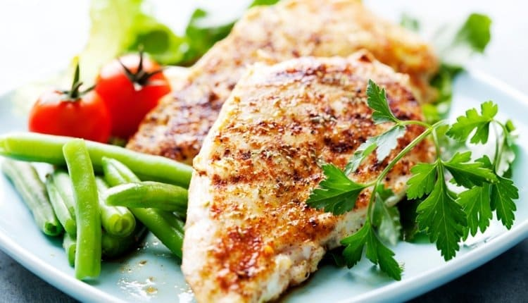
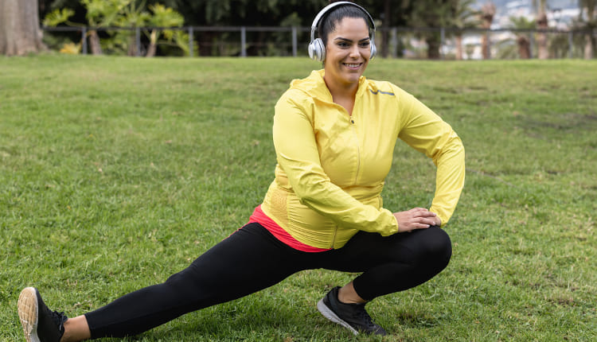
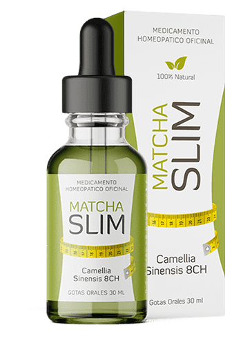
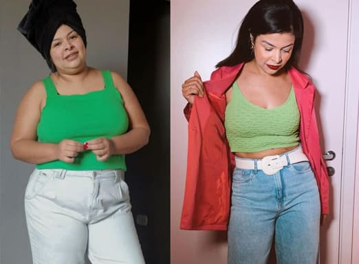
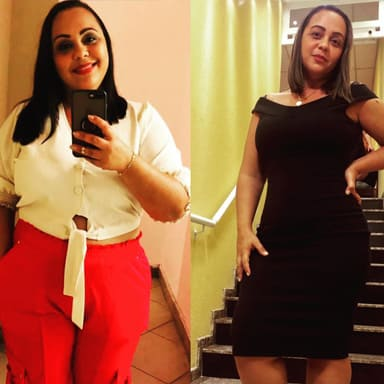
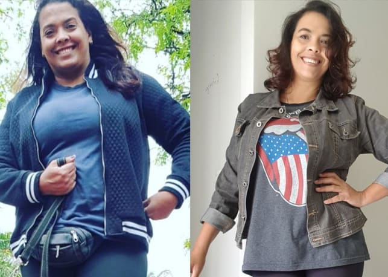
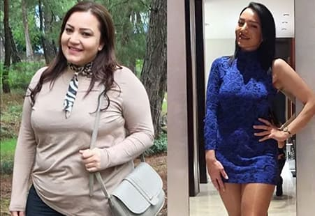
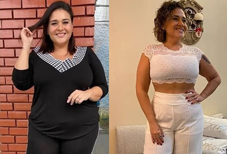
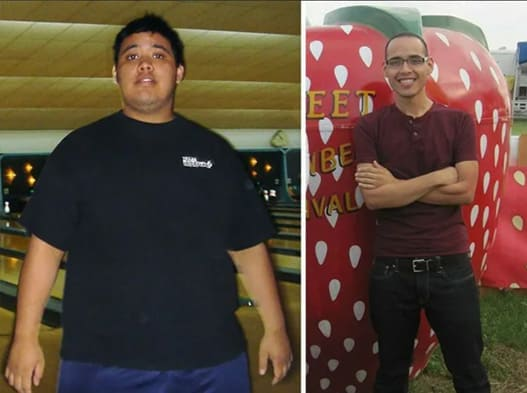

Nuestro tratamiento, "Hack food", es para construir un cuerpo fuerte y saludable en 4 semanas.
Perder peso con la ayuda de tecnología patentada sin dieta ni ejercicios agotadores.
¿En qué consiste el programa de pérdida de peso Hack
Food?
Recomendaciones de nuestro especialista certificado para perdida de peso
efectiva y evitar recobrar esos kilos de más.

Consejos para mantener su condición física y vida saludable.

El eficaz tratamiento para la perdida de peso, , acelera el metabolismo 10 veces y mantienen este efecto. 
Si has estado:
Soñando con tener un cuerpo fuerte y saludable
Luchando para mantener los resultados de la pérdida de peso anterior
Queriendo perder peso de una vez por todas
Siendo incapaz de evitar comer tu comida favorita
Buscando una manera de no tener que pasar horas en el gimnasio
Queriendo mantener tu belleza, salud y juventud
Entonces nuestro tratamiento con máxima efectividad
comprobada es exactamente lo que necesitas.
Hack Food, creado por , cambió la vida de estas personas para mejor:

Isabel, ANTES 89 kg, DESPUÉS 67 kg
Amelia, ANTES 72 kg, DESPUÉS 59 kg
Jimena, ANTES 96 kg, DESPUÉS 73 kg
Clara, ANTES 91 kg, DESPUÉS 76 kg
Emilia, ANTES 64 kg, DESPUÉS 53 kg
¡Quemar la grasa sin someterse a cirugías!
Es hora de dejar que te avergüence tu propio cuerpo. No retrases la pérdida de peso cuando los
números de la balanza están excedidos. Cuida tu figura ahora mismo y, en un mes, te olvidarás del
exceso de peso y podrás llevar lo que quieras en lugar de llevar lo que te entra.
Nuestro curso de ejercicios, Hack Food, te ayudará con lo
siguiente:
Superar las razones para ganar el peso excesivo.
Adelgazar hasta el tamaño deseado.
Amarte a ti mismo y a tu cuerpo.
Preguntas más frecuentes
¿Es necesario seguir todas las recomendaciones de dieta y ejercicio?
No, no es necesario. Es importante saber que seguir todas las recomendaciones te ayudarán a
acelerar la pérdida de peso y alcanzar tu meta deseada más rápidamente.
¿Cuánto peso podría perder?
Nuestro curso de ejercicios, Hack Food, dura 4 semanas. La cantidad de peso perdido varía según
el individuo, dependiendo de su peso inicial, la cantidad de actividad física, los detalles de
su dieta y otros factores. En promedio, 12-17 kg se pierden después de 4 semanas.
No pude alcanzar mi meta deseada después de un mes. ¿Qué debo hacer?
Si no has alcanzado el objetivo deseado después de un mes, sigue las recomendaciones de
nuestros expertos y toma hasta
que alcances tu meta deseada.
¿Qué tan seguro es?
Nuestro programa, Hack Food, fue desarrollado por algunos de los mejores especialistas en
nutrición adecuada y estilos de vida saludables. Los suplementos alimentarios de constan estrictamente de componentes naturales. Se ha
probado a fondo y se ha demostrado que es seguro y libre de efectos secundarios.
Después de completar el programa, Hack Food, ¿puedo esperar que vuelva mi exceso de peso?
No, nuestro programa fue diseñado para ayudarte a alcanzar y mantener tu meta deseada. Para
mantener los resultados, te recomendamos que continúes tomando el suplemento si lo tomas cada 5-6 meses, evitarás el aumento de peso
y ayudará a mantener la pérdida de peso reciente.
¿Cómo se debe tomar
Añade 30 gotas de a una taza
de agua tibia y tómalo todos los días independientemente de si has comido o no. No es necesario
que te pongas a dieta, así que puedes comer lo que quieras. Mientras tanto, tu cuerpo quemará
activamente las reservas de grasa y tendrá la energía para usar en el día. ¡Pierde peso sin
sentir hambre, cansancio o incomodidad!
El mejor día para comenzar a perder peso es HOY
Rellena un formulario de pedido, incluida la información de contacto.
Obtén un paquete con recomendaciones y .
No hay necesidad de pagar por adelantado en el momento de la entrega .
Recibe un paquete para unirte a Hack Food con un descuento del 50%
Date prisa ya que hay
un número limitado de participantes.
Los primeros 15 participantes recibirán una
recomendación adicional de los especialistas en oradores anfitriones ¡ABSOLUTAMENTE GRATIS! ¡SÉ EL
PRIMERO!
Obtendrás un paquete de Hack Food que incluye:
Recomendaciones personalizadas por nuestros especialista en línea
Actividad física recomendada
Paquete del tratamiento reductor de medidas
Comentarios
Isabel Duromante
Responder
Wow, es un programa tan interesante a un precio tan bueno. Encontré estaba a la venta hace medio año, pero el precio era un
poco caro, a pesar de que las críticas eran más que alabanzas. No pude juntar el dinero para
conseguirlo antes, pero recientemente pedí un paquete que incluía las recomendaciones de los
especialistas. Realmente quiero perder peso. 20 kilogramos innecesarios me están guardando de
vivir una vida normal.
Amelia Maciano
Responder
Recientemente pedí el paquete , en ese momento, cuando no tenía
descuento, pero valió la pena. En una semana y media, me las arreglé para perder 5 kg, mi
apetito se redujo y no me atraía la comida chatarra en absoluto. Las recomendaciones eran tan
sencillas y fáciles de entender que incluso un niño pequeño podía hacerlo. Me gustó porque no
tienes que cocinar comidas complejas, todo era sencillo y disponible. Puedes comer con
moderación cualquier cosa que desees.
Jimena González
Responder
Me preguntaba si funcionaría con apenas un poco de exceso de peso. Hace un año perdí 34 kg por
mi cuenta. En verdad, pongo mucho esfuerzo en comer a cada hora y contar gramos. Entonces, me
cansé y comencé a comer lo que quiero y el peso volvió otra vez. Si sólo pudiese perder 7 kg
mientras tanto.
Miguel Pintos
Responder
¿Es esto solamente para las mujeres o satisfaría a hombres también? No estaría en contra de
deshacerme de parte de mi vientre.
Chloe Parry
Responder
Mi amiga bebió el suplemento pero se negó a hacer cualquier tipo
de ejercicio. Ella simplemente se acostaba en la cama, comía sánguches y veía series de
televisión. De alguna manera logró perder 8 kg en un mes. Tengo curiosidad si he seguido todas
las recomendaciones, ¿cuánto peso perdería?
Emilia Vivón
Responder
Mi marido y yo decidimos ponernos en forma y pedimos un paquete
para dos. Hemos estado tratando de seguir todas las recomendaciones durante dos semanas. A
menudo salíamos a caminar y nos abstuvíamos completamente de algunos alimentos. ¡Nuestro peso
total perdido combinado es 24 kg! He perdido 13 kg y él ha perdido 11. Es difícil explicar con
palabras el lujo de poder hacer lo que quieres hacer sin sentirte incómodo. Vamos a seguir el
programa y nuestro próximo objetivo es perder otros 30 kg juntos.
José Sandero
Responder
Un agradecimiento especial a los creadores de este programa . Me
has traído de vuelta a la vida y has salvado a mi familia. No voy a escribir mucho aquí. Dejaré
mis fotos antes y después con una diferencia de 2 meses.

Lara Jorge
Responder
Me llamó la atención este programa , ya que me atrajo
inmediatamente. Me gustaría probarlo, ya que tengo curiosidad por saber si puede ayudar a perder
mucho peso. ¿Hay alguna restricción de edad, de lo contrario yo lo ordenaría para mi madre, pero
ella es mayor, además ella tiene hipertensión y prediabetes.
Elena Campos
Responder
Mi madre perdió 25 kg en 3 meses gracias a este programa. Ella también tenía hipertensión,
pero ella ha conseguido más ahora porque era todo debido a su exceso de peso. Sus
articulaciones ya no duelen y se ve más joven para su edad. Este programa es definitivamente
seguro ya que ha sido comprobado.
Lucía Afilo
Responder
Encontré el programa justo a tiempo ya que tengo un mes para ahorrar y 10 kg para perder. ¿Es
posible? El dietólogo dijo que sería imposible.
Laura Cormaza
Responder
Cualquier cosa es posible si lo deseas lo suficiente. Una vez logré perder 15 kg en un mes.
Me tomó mucho esfuerzo hacerlo y no pude mantener el peso perdido. 2 meses más tarde, empecé
a ganar peso de nuevo. Pedí este programa y espero que me
ayude a adelgazar de nuevo y olvidar el exceso de peso.
Graciela Husoni
Responder
Me gustaría dar las gracias genuinamente a los creadores de este
programa . Gracias a él, logré perder 17 kg. Yo había estado luchando con este peso por un
largo y agonizante mes y para nada. Entonces, gracias a él, perdí peso rápida y agradablemente y
pude mantenerlo. Nunca me he sentido tan hermosa y feliz. ¡Está haciendo del mundo un lugar más
bonito y luminoso!
Todo debe ser una forma de ganar dinero. No lo creo. Hace un año y medio participé en una
maratón de pérdida de peso. Todo estaba lleno de mentiras, ya que nadie vio ninguno de los
resultados prometidos. La motivación por lo menos valió la pena, pero no creo en maratones o
programas
Sofía Barcas
Responder
Bueno, ¿fue porque no siguió todas las reglas del maratón? Se incluye una dieta y una rutina
de ejercicio. Un maratón de pérdida de peso es un trabajo duro que requiere mucho esfuerzo.
Créeme, sé de lo que estoy hablando.
Recomendaciones de nutrición
Alicia Mayo, nutricionista, tiene 7 años de experiencia laboral
Además de establecer las porciones diarias, recomiendo que se abstenga de
los antojos. Los antojos irán gradualmente disminuyendo a medida que no se deje tentar con la comida
chatarra. Recuerda que puedes comer cualquier cosa que desees con moderación.
Groceries consisting of a base portion of:
Carne, pescado y marisco
Verduras, verduras, bayas y frutas.
Productos lácteos
Los huevos, pero limitan preferentemente el consumo de yema
Granos y frijoles
Pan de trigo integral
Frutos secos, nueces y semillas
Agua potable limpia, té y café sin azúcar
Foods that should be limited:
Comida rápida y comida chatarra.
Bebidas carbonatadas.
Se recomienda sustituir el azúcar por miel o edulcorante
Alimentos refinados
Alcohol
Alimentos listos para cocinar
Chocolate excepto chocolate 70% oscuro
Cereales, pasta y granos de cocción rápida
Carnes procesadas
Salsa prehecha
CON no tendrás que limitar
ningún alimento. Este suplemento te ayudará a reducirtsu consumo diario de calorías en 5 veces
gracias a las enzimas de bloqueo que son responsables de la descomposición y absorción de
carbohidratos, que representan el 70% de todos los nutrientes entrantes.
Puedes perder peso de manera efectiva y rápida y mantener tu peso durante mucho tiempo siguiendo
nuestras recomendaciones.
Actividad física recomendada
Gabriel
Shepherd, entrenador personal, 6 años de experiencia
Por lo general, recomendamos a las personas que quieran mantenerse
saludables y mantener cierto peso que empiecen a hacer una rutina de entrenamiento regular,
como:
Caminar diariamente por no más de 15-30 minutos.
Sustituir los viajes en transporte público por viajes a pie cuando sea posible.
Utilizar las escaleras en lugar del ascensor.
Hacer natación si es posible.
Prueba un entrenamiento de mañana "perezoso" sin salir de la cama.
Se puede hacer un entrenamiento perezoso en la cama después de despertarse o antes de
dormir dos veces al día. Se recomienda hacer cada ejercicio no menos de 5 veces. El
entrenamiento incluye:
Respiración adecuada, lenta y profunda.
Estiramiento.
La pierna repetida se eleva alternando entre la izquierda y la derecha.
Doble levantamiento de pierna.
Estiramiento del cuello sentado
Estiramiento de la pierna sentada a los abdominales
El programa, "Hack Food" , fomenta
cualquier forma de actividad física, desde visitar el gimnasio y utilizar máquinas de ejercicios
hasta montar en bicicleta y simplemente ir a caminar.
Wow, es un programa tan interesante a un precio tan bueno. Encontré estaba a la venta hace medio año, pero el precio era un poco caro, a pesar de que las críticas eran más que alabanzas. No pude juntar el dinero para conseguirlo antes, pero recientemente pedí un paquete que incluía las recomendaciones de los especialistas. Realmente quiero perder peso. 20 kilogramos innecesarios me están guardando de vivir una vida normal.
Recientemente pedí el paquete , en ese momento, cuando no tenía descuento, pero valió la pena. En una semana y media, me las arreglé para perder 5 kg, mi apetito se redujo y no me atraía la comida chatarra en absoluto. Las recomendaciones eran tan sencillas y fáciles de entender que incluso un niño pequeño podía hacerlo. Me gustó porque no tienes que cocinar comidas complejas, todo era sencillo y disponible. Puedes comer con moderación cualquier cosa que desees.
Me preguntaba si funcionaría con apenas un poco de exceso de peso. Hace un año perdí 34 kg por mi cuenta. En verdad, pongo mucho esfuerzo en comer a cada hora y contar gramos. Entonces, me cansé y comencé a comer lo que quiero y el peso volvió otra vez. Si sólo pudiese perder 7 kg mientras tanto.
¿Es esto solamente para las mujeres o satisfaría a hombres también? No estaría en contra de deshacerme de parte de mi vientre.
Mi amiga bebió el suplemento pero se negó a hacer cualquier tipo de ejercicio. Ella simplemente se acostaba en la cama, comía sánguches y veía series de televisión. De alguna manera logró perder 8 kg en un mes. Tengo curiosidad si he seguido todas las recomendaciones, ¿cuánto peso perdería?
Mi marido y yo decidimos ponernos en forma y pedimos un paquete para dos. Hemos estado tratando de seguir todas las recomendaciones durante dos semanas. A menudo salíamos a caminar y nos abstuvíamos completamente de algunos alimentos. ¡Nuestro peso total perdido combinado es 24 kg! He perdido 13 kg y él ha perdido 11. Es difícil explicar con palabras el lujo de poder hacer lo que quieres hacer sin sentirte incómodo. Vamos a seguir el programa y nuestro próximo objetivo es perder otros 30 kg juntos.
Un agradecimiento especial a los creadores de este programa . Me has traído de vuelta a la vida y has salvado a mi familia. No voy a escribir mucho aquí. Dejaré mis fotos antes y después con una diferencia de 2 meses.
Me llamó la atención este programa , ya que me atrajo inmediatamente. Me gustaría probarlo, ya que tengo curiosidad por saber si puede ayudar a perder mucho peso. ¿Hay alguna restricción de edad, de lo contrario yo lo ordenaría para mi madre, pero ella es mayor, además ella tiene hipertensión y prediabetes.
Mi madre perdió 25 kg en 3 meses gracias a este programa. Ella también tenía hipertensión, pero ella ha conseguido más ahora porque era todo debido a su exceso de peso. Sus articulaciones ya no duelen y se ve más joven para su edad. Este programa es definitivamente seguro ya que ha sido comprobado.
Encontré el programa justo a tiempo ya que tengo un mes para ahorrar y 10 kg para perder. ¿Es posible? El dietólogo dijo que sería imposible.
Cualquier cosa es posible si lo deseas lo suficiente. Una vez logré perder 15 kg en un mes. Me tomó mucho esfuerzo hacerlo y no pude mantener el peso perdido. 2 meses más tarde, empecé a ganar peso de nuevo. Pedí este programa y espero que me ayude a adelgazar de nuevo y olvidar el exceso de peso.
Me gustaría dar las gracias genuinamente a los creadores de este programa . Gracias a él, logré perder 17 kg. Yo había estado luchando con este peso por un largo y agonizante mes y para nada. Entonces, gracias a él, perdí peso rápida y agradablemente y pude mantenerlo. Nunca me he sentido tan hermosa y feliz. ¡Está haciendo del mundo un lugar más bonito y luminoso!
Todo debe ser una forma de ganar dinero. No lo creo. Hace un año y medio participé en una maratón de pérdida de peso. Todo estaba lleno de mentiras, ya que nadie vio ninguno de los resultados prometidos. La motivación por lo menos valió la pena, pero no creo en maratones o programas
Bueno, ¿fue porque no siguió todas las reglas del maratón? Se incluye una dieta y una rutina de ejercicio. Un maratón de pérdida de peso es un trabajo duro que requiere mucho esfuerzo. Créeme, sé de lo que estoy hablando.